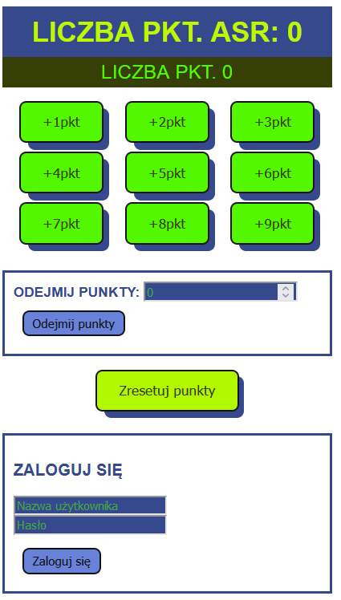
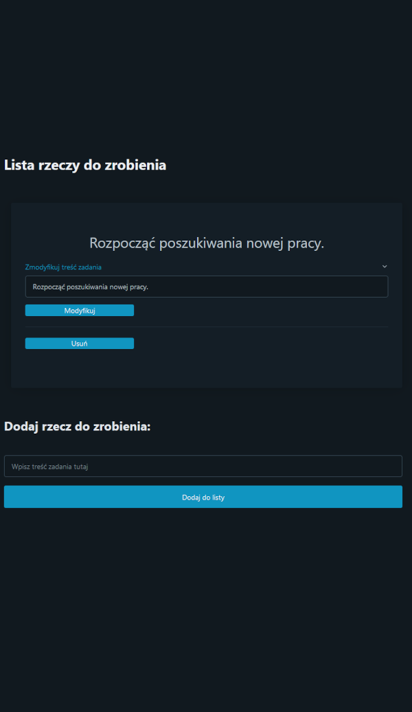
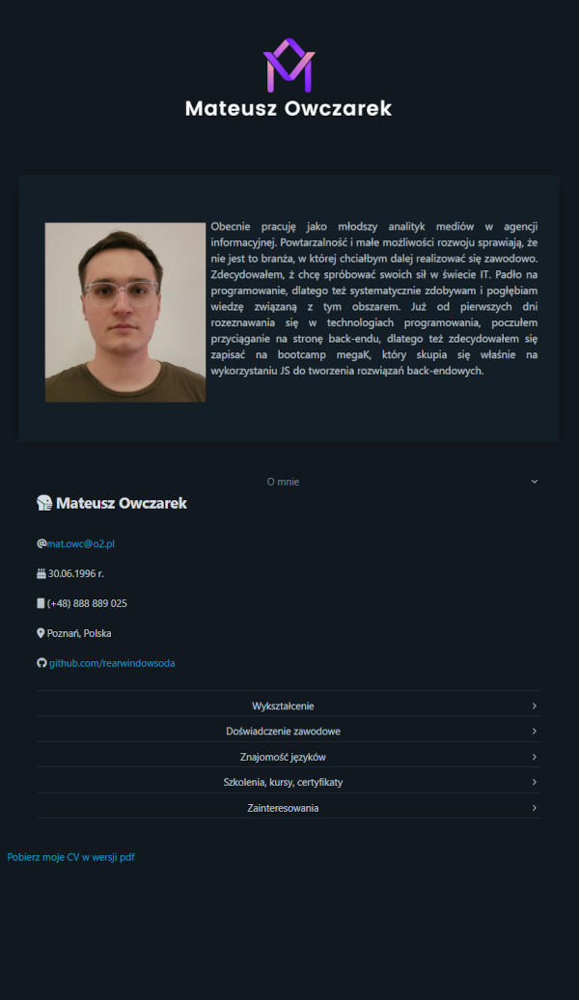

Obecnie pracuję jako młodszy analityk mediów w agencji informacyjnej. Powtarzalność i małe możliwości rozwoju sprawiają, że nie jest to branża, w której chciałbym dalej realizować się zawodowo. Zdecydowałem, ż chcę spróbować swoich sił w świecie IT. Padło na programowanie, dlatego też systematycznie zdobywam i pogłębiam wiedzę związaną z tym obszarem. Już od pierwszych dni rozeznawania się w technologiach programowania, poczułem przyciąganie na stronę back-endu, dlatego też zdecydowałem się zapisać na bootcamp megaK, który skupia się właśnie na wykorzystaniu JS do tworzenia rozwiązań back-endowych.
O mnie
Mateusz Owczarek
30.06.1996 r.
(+48) 888 889 025
Poznań, Polska
Wykształcenie
10.2015 - 06.2018
Uniwersytet im. Adama Mickiewicza w Poznaniu
Kierunek: socjologia
Poziom wykształcenia: licencjat
Praca licencjacka: Lokowanie idei w polskich serialach obyczajowych.
Doświadczenie zawodowe
06.2019 - obecnie
Analityk mediów
PRESS-SERVICE Monitoring Mediów Sp. z o.o. | Poznań
Śledzenie bieżących przekazów medialnych. Cyfrowe przetwarzanie i konwersja prasy, radia i telewizji. Gromadzenie i kategoryzowanie kluczowych informacji zgodnie z wytycznymi dostarczonymi przez klientów.
07.2018 - 10.2018
Specjalista ds. obsługi klienta
Via Vox Group S.A. | Projekt "Inpost" Poznań
Obsługa infolinii przychodzącej. Przyjmowanie reklamacji i kontrola przebiegu procesu reklamacyjnego. Współpraca z lokalnymi i regionalnymi oddziałami doręczającymi, kierowcami i innymi pracownikami działu obsługi klienta.
07.2017 – 08.2017
Pracownik magazynowy
Adecco Poland Sp. z o.o. Gądki
06.2017 – 07.2017
Audytor inwentaryzacji
Job Impulse Polska Sp. z o.o. Poznań
05.2015 - 05.2015
Obserwator uczestniczący
Fundacja Altum Poznań
Socjologiczna obserwacja uczestnicząca. Współpraca przy tworzeniu raportu z badań jakościowych.
Znajomość języków
Język angielski: poziom średnio zaawansowany.
Certyfikat biegłości językowej B2 | Szkoła Językowa UAM
Szkolenia, kursy, certyfikaty
07.2021 - obecnie

megaK (1. edycja)
Back-end Java Script Bootcamp
Organizator: Jakub Król, Bartłomiej Borowczyk
W trakcie nauki (planowane zakończenie (08.2022)
Bootcamp mający na celu przygotowanie uczestników do pracy na stanowisku junior JS developera.
-
Technologie:
- HTML
- CSS
- JS
- Node.js
- Express
- Handlebars
- Typescript
- React
- MySQL
- MongoDB
- Nest.js
05.2021
Excel ★Mistrz★
Organizator: Udemy | Adam Kopeć
Kompleksowy kurs Excela dla początkujących i średnio zaawansowanych.
02.2021
Instruktor szkolenia psów
Organizator: Firma Szkoleniowa Kar-Group
08.2020
Certyfikat kompetencji miękkich
Organizator: #nowystart Akademia Home.pl
08.2020
Front-End Developer
Organizator: #nowystart Akademia Home.pl
Nauka podstaw HTML i CSS
Zainteresowania
muzyka fingerstyle, psychologia zwierząt, socjologia mediów, nowe technologie
ASR Licznik

Aplikacja powstała po to, by ułatwić pracownikom firmy, w której obecnie pracuję, naliczanie sobie punktów za opracowane segmenty radiowe. Pracownicy mają możliwość zapisywać swoje punkty lokalnie do pamięci przeglądarki lub mogą też założyć konto i zapisywać punkty do bazy danych.
Wykorzystano następujące technologie: HTML, CSS, JS, Handlebars, Node.js, Express.js, MongoDB, JSON Web Token, Github
Link do aplikacji: asrlicznik.ct8.pl
Link do repozytorium GH github.com/rearwindowsoda/asr-public-git
Todolista

Prosta aplikacja CRUD. Pozwala na wyświetlenie wszystkich zadań do wykonania, dodawanie nowych, modyfikowanie treści istniejących i usuwanie zadań wykonanych.
Wykorzystano następujące technologie: HTML, CSS, Pico.css, Handlebars, Node.js, Express.js, Mysql2/promises, Heroku, Github
Link do aplikacji: asrlicznik.ct8.pl
Link do repozytorium GH github.com/rearwindowsoda/todo-git-public
Strona osobista

Personalna strona statyczna służąca jako elektroniczne CV / wizytówka.
Wykorzystano następujące technologie: HTML, CSS, Pico.css, Node.js, Express.js, SSL
Wykorzystano następujące technologie: HTML, CSS, Pico.css, Node.js, Express.js, SSL
Link do aplikacji: mateuszowczarek.eu
Link do repozytorium GH github.com/rearwindowsoda/cvpage